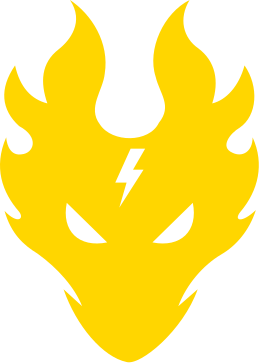

Auditoria de código
Rode dentro do seu projeto e peça uma auditoria. Ele vira só leitura, rastreia o fluxo de dados (SQLi, injeção, XSS, segredos, cripto fraca) e só reporta o que consegue provar. Escreve apenas o ANALISE_PROJETO_<data>.md.

clawfastUm agente de pentest que mora no seu terminal.
Você fala em português, ele pensa, executa e prova.
Com as suas chaves, sem login e sem limite de uso.
❯ faça um recon completo de example.com ❯ teste essa API por IDOR e me mostre a prova ❯ analise o meu projeto e me diga onde estão as falhas ❯ gere um relatório do que encontramos até agora
O clawfast é um operador de segurança que trabalha na sua frente. Ele roda comando, faz requisição HTTP, mapeia o alvo, acha vulnerabilidade e escreve o laudo. Não é autocomplete: é um agente com ferramentas reais na mão.
As ferramentas de pentest vivem espalhadas, um scanner aqui, um script ali, o relatório no fim. O clawfast junta tudo num lugar só, guiado por conversa, rodando na sua máquina.
Use o clawfast só em sistemas que você tem autorização explícita para testar.
Rode dentro do seu projeto e peça uma auditoria. Ele vira só leitura, rastreia o fluxo de dados (SQLi, injeção, XSS, segredos, cripto fraca) e só reporta o que consegue provar. Escreve apenas o ANALISE_PROJETO_<data>.md.
Requisição HTTP nativa, recon de subdomínio, portas e conteúdo, ferramentas que você já tem instaladas e verificação de exploit. Se algo for sair do escopo, ele para e pergunta.
Um orquestrador sobe quatro agentes (Discovery, Web, Source, Validator) no mesmo alvo e cruza código com superfície para achar falhas como SSRF e injeção.
Pacotes no estilo GHDB para segredos, backups, configs, .git exposto e painéis de admin, sem chave, via DuckDuckGo e Bing.
Cole a chave no chat. Ele reconhece o serviço (Shodan, VirusTotal, OpenAI, GitHub e outros), guarda local e mostra o segredo sempre mascarado.
APK, XAPK, AAB, DEX, ELF, PE e Mach-O: descompila, confere compatibilidade, assina para release e abre .so no Ghidra. Nada é instalado sem você marcar.
Ensine técnicas e checklists, ou use as skills que você já tem no Claude e no Codex. Veja Skills logo abaixo.
Escreva um CLAWFAST.md (ou AGENTS.md / CLAUDE.md) na pasta e ele segue essas regras em toda conversa. Um ~/.clawfast/CLAWFAST.md vale para qualquer pasta.
Fale "lembra que…" ou "nunca…" e ele guarda suas preferências para qualquer projeto e modelo. Veja e apague com /preferencias.
/api conecta NVIDIA, OpenRouter, Gemini, OpenAI, Claude, Groq, DeepSeek, Ollama, LM Studio ou qualquer API compatível com OpenAI.
/conect deixa o Claude Code, Codex ou Gemini dirigir o clawfast via MCP, preso em 127.0.0.1 e protegido por token.
Quando a conversa chega perto do limite do modelo, a parte antiga vira resumo e a recente fica inteira. /compact faz na hora, /autocompact 300k define o limite.
Se um modelo falha ou bate no limite de uso, ele passa para o próximo sozinho.
Terminal · Windows, Linux e macOS
Um comando. Sem Node, sem npm: o clawfast é um executável único com o runtime embutido.
$s = Join-Path $env:TEMP 'clawfast-install.ps1'; Invoke-WebRequest -UseBasicParsing 'https://github.com/devadeiltonlima/ClawFast-/releases/latest/download/install.ps1' -OutFile $s; & ([scriptblock]::Create((Get-Content -Raw $s)))
curl -fsSL https://github.com/devadeiltonlima/ClawFast-/releases/latest/download/install.sh | sh export PATH="$HOME/.clawfast-runtime/bin:$PATH"
Tem para Windows x64, Linux x64, macOS Intel e Apple Silicon. O instalador confere o SHA-256 do executável antes de instalar e guarda tudo em ~/.clawfast-runtime/. No Linux e no macOS, coloque a linha do export PATH no seu ~/.bashrc ou ~/.zshrc.
clawfast version
clawfast
Na primeira vez ele pede uma chave de modelo. A NVIDIA build dá modelos de ponta de graça: crie a chave lá e cole quando o clawfast pedir. Ela fica em ~/.clawfast/.env, na sua máquina.
Depois é só conversar. Ele escolhe as ferramentas, executa, mostra a saída ao vivo e entrega o resultado. O que ele cria (scripts, saídas, relatórios) fica na pasta SPRIT, dentro da pasta onde você abriu o clawfast.
| Tecla | O que faz |
|---|---|
| Esc | interrompe o que está rodando |
F4 ou [ PARAR ] | para o modelo, a fila, as ferramentas, as sessões vivas e a árvore inteira de processos |
| Ctrl+C | copia o que está selecionado; sem seleção, fecha o clawfast |
| Ctrl+T | abre ou fecha o trabalho recolhido da última resposta |
Digite / a qualquer momento para abrir o menu.
| Comando | O que faz |
|---|---|
/model | troca o modelo da sessão (/model auto volta ao automático) |
/variant | esforço de raciocínio do modelo: baixo, médio ou alto |
/session | abre uma sessão nova ou volta para uma guardada |
/compact · /autocompact | compacta a conversa agora ou define o limite automático |
/api | conecta um dos 25 gateways de IA |
/preferencias | mostra e apaga o que ele lembra de você |
/skills · /skillcreator · /skill install | lista, cria ou instala skills |
/conect | conecta uma IA externa via MCP |
/nov | novidades da versão |
/exit | fecha o clawfast |
Para voltar a uma conversa depois de fechar, use o comando que aparece no encerramento:
clawfast -s ses_0f7d409d7be8c064
clawfast upgrade
Ele consulta a última release, baixa o executável novo, confere o SHA-256 e troca o binário guardando o anterior. Se algo der errado, a versão antiga continua no lugar. O clawfast também avisa sozinho quando sai versão nova.
O clawfast saiu do npm porque a verificação automática do npm passou a barrar as publicações e travou a versão latest. Desde a 3.x a distribuição é só pelo GitHub Releases.
Uma skill é um conhecimento empacotado: um procedimento, um checklist, um playbook. O clawfast usa o mesmo formato do Claude e do Codex (uma pasta com SKILL.md e, se tiver, scripts e referências). Então a skill que você já tem nessas IAs funciona no clawfast.
Instale pelo caminho da pasta, de um .skill, de um .zip (pode ter várias dentro) ou de um .md:
❯ /skill install ~/.codex/skills/minha-skillVocê também pode chamar pelo nome (/nome-da-skill). /skills lista e /skillcreator cria uma do zero.
~/.claude/skills e ~/.codex/skills. Clique em Usar no clawfast..skill, um .zip, um .md solto, ou escolha a pasta da skill.SKILL.md por completo: nome, descrição, ferramentas que ela usa, scripts e referências.Como ele usa: nenhuma skill fica carregada o tempo todo. O clawfast sabe o nome e a descrição de cada uma e, quando o seu pedido combina, lê a skill antes de agir. No app você vê na hora: aparece "Leu a skill X" na conversa.
App para Windows beta
O clawfast agora também tem um app de desktop. Ele já vem com o mesmo motor do clawfast de terminal, na mesma versão: tudo que o terminal faz, o app faz, e com o app o clawfast ganha ainda mais poder. Você enxerga o trabalho do agente, controla tudo por menus e conecta outras IAs e skills com um clique.
O app está em fase beta e pode conter erros. Se algo der errado, abra uma issue no repositório.
Baixar clawfast-app-windows-x64.exe
O motor vem dentro do instalador, então não precisa instalar o clawfast de terminal antes.
Todas as sessões salvas com título automático. Clique para voltar a uma, renomeie ou apague (o que você apaga fica 30 dias numa lixeira antes de sumir).
Cada comando, ferramenta e pesquisa vira um cartão recolhido. Um clique abre o comando e a saída. A resposta da IA fica limpa por cima, e todo bloco de código tem botão de copiar.
Ao lado do modelo, escolha como a sessão age: Padrão, Confirmar ações (pede aprovação para tudo), Planejamento (só planeja), Seguir sem pedir (executa tudo sem perguntar) ou Negar sem perguntar (o que precisaria de aprovação é negado e ele segue sozinho).
Com o app em segundo plano, ele avisa quando uma execução longa termina ou quando uma aprovação está esperando você.
O que está rodando agora, quanto do contexto já foi usado, a lista de tarefas do plano, os agentes trabalhando em paralelo, as skills que a IA leu, os sites visitados e os conectores ativos.
Escolha o modelo e o esforço de raciocínio ali mesmo, anexe imagens, abra os comandos com / e mande mensagens novas enquanto ele trabalha (elas entram na fila).
Editar, voltar até ali e reenviar, começar uma conversa nova a partir dela, ou copiar.
Quando a IA precisa de uma decisão sua, ela pergunta num formulário com opções, em vez de parar no meio.
Antes de encerrar, um verificador silencioso confere se o pedido foi atendido. Se faltou algo, ele volta e faz só o que faltou, sem repetir a resposta.
Rolou a conversa para cima? Um botão leva de volta à última mensagem.
| Seção | O que você ajusta |
|---|---|
| Geral | Cor de destaque (5 temas), fundo, fontes, largura da conversa, animações, aviso de novidades e comandos por conversa ("troca o modelo", "liga o safe mode" e ele roda o comando). |
| Modelos e chaves | Modelo ativo, chaves de API por provedor, compactação automática do contexto e modo altíssimo (persona de pentest no máximo). |
| Rede e Tor | Saída pelo Tor, IP que o alvo vê, troca de circuito e domínios que passam direto ou ficam bloqueados. |
| MCP | Servidores MCP conectados e a permissão de cada ferramenta: permitir, aprovar, perguntar ou bloquear. |
| Conectores externos | Liga o Claude Code, Codex, Cursor, Cline, Windsurf, Gemini CLI ou Qwen Code ao clawfast com um clique. A conexão mostra um aviso no canto, e a conversa "Via MCP" aparece na lateral quando a IA conectada começa a usar o clawfast. |
| Uso | Quanto você usou de cada provedor. |
| Segurança | Safe-mode: pede confirmação antes de escrever ou apagar arquivo e antes de rodar comando. |
| Privacidade | Escopo autorizado: os alvos que as ferramentas podem atingir (domínio, *.dominio, faixa de IP ou link), com importação de .txt. |
| Skills | Suas skills e as que já estão instaladas no Claude e no Codex. |
| Sistema | Versão, plataforma, pasta de trabalho, conversas salvas e reiniciar o motor. |
Auditoria de código, recon, avaliação multi-agente, Google Dorks, conectar APIs, engenharia reversa, memória, gateways de IA e contexto longo funcionam igual no app, porque o motor é o mesmo. Os comandos de barra também: digite / na caixa de mensagem.
Quando sai versão nova, aparece um ícone de atualização no rodapé do app. Um clique baixa e instala.